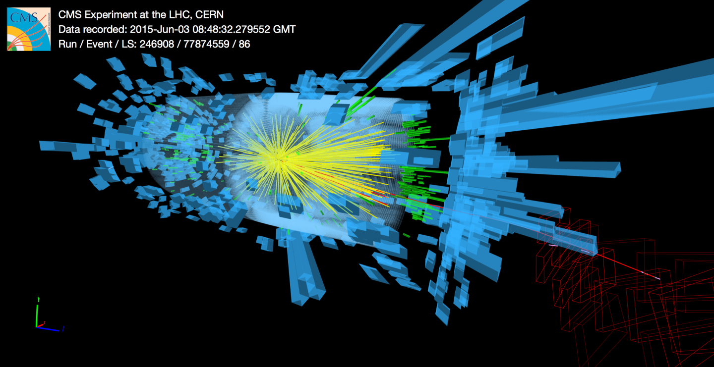

New Era of Experimental HEP Underway at 13 TeV
Today was a momentous day for all of us who care about the cutting-edge efforts to probe the fundamental laws of nature. The 2-year shutdown of the LHC finally came to an end as the proton beams once again ramped up, collisions began at the record energy of 13 TeV, and the experiments started taking data. This is a significant step beyond the collision energies achieved during the first LHC run – 7 and 8 TeV – which means that the LHC experiments will be able to look deeper into the heart of matter than they have so far. This is very much a step into the unknown, for which all of humanity deserves to be proud.
If it was a moving day for onlookers like me, it was clearly even more so for the LHC operators and experiment personnel, and deservedly so! I wish them the best of luck over the coming years of data taking and analysis. More information about today’s events, pictures and videos can be found at their live blog and image gallery.

Given the occasion, I feel there are a number of points about the nature of high energy physics in general that are worth emphasizing, since I so often see them being badly misunderstood by many observers. Specifically about the relationship between theory and experiment in HEP, what testability and falsifiability entail in this domain given what we know today, and what we can expect from such experiments going forward.
Particle Physics At the Boundaries of Testability
It’s important to emphasize this fact that particle collisions at higher energies are the primary frontier of knowledge in fundamental physics, and in a sense are equivalent to probing shorter distances. This is actually a central organizing concept in our most successful physical framework, quantum field theory. A description of physics at high energies/short distances is regarded as more fundamental, and from it we can derive what happens at lower energies/longer distances, often loosing details in the process that are sensitive only to the higher-energy processes. This is why we need big circular colliders to create particle beams with as much energy as possible, but it’s also a crucial concept to grasp due to the major role it plays in recent worries about the limits of testability and falsifiability, about which there has been much debate and consternation. In this new stage of fundamental exploration at LHC13, the importance of this understanding is arguable greater than ever before.
Clearly it’s a very special place we’re at in the development of fundamental physics. This is the first major advancement in collider reach since the completion of the Standard Model with the discovery of the Higgs boson in 2012. While the theoretical concept of the Higgs field had been around for decades, and the direct detection of the weak W and Z bosons in the 1980’s provided strong evidence for the overall picture, the discovery of the Higgs particle and the measurement of its mass (the last undetermined parameter of the SM) marked the first time we could convincingly say we had a complete, self-contained theory of particle physics. By complete of course I don’t mean that it’s a final theory, but that it accounts for essentially all phenomena we directly observe in particle physics experiments in a logically-consistent way.
Thus the major distinction between this new era of 13 TeV collisions and the previous one is that in 2012 we knew that a new particle, the Higgs boson, had to be discovered, or else the Standard Model was simply wrong. One way or another, we were sure to learn something quite significant. In 2015, by contrast, we cannot be sure that anything in particular is going to happen. Obviously there are plenty of outstanding mysteries, and plenty of theorized scenarios in which new physics could emerge, but there are no longer any guarantees. The Standard Model could conceivably be the correct description of all particle physics data not only at 13 TeV but even to exponentially higher energies. In fact, the first energy regime where we can be certain that this general framework of particle physics will break down is at the Planck scale, around \(10^{16}\) TeV, where quantum gravity effects become important and where no conceivable collider experiment can probe directly.
This is the unavoidable negative side of the otherwise triumphant success in completing the SM. The fact that the most pressing questions directly related to the known particles have been resolved means we have no clear indication from nature where next to look for something new. In particular, it would be extremely useful to have a hint as to what general energy range new physics may be expected to show up in, so that decisions about new experiments could be planned accordingly. And while we do have some hints, more concrete information on this question remains illusive.
These observations have profound implications for fundamental physics and the philosophy of science. It is the task of theoretical physics to craft models that can be tested experimentally, but since the completion of the SM most theories of particle physics inevitably need to introduce a new energy scale; for example, a scale that may be associated with a new particle mass or with the breaking of a new symmetry. And often this new scale is not fixed by anything. Many phenomenological papers examine models where these scales are accessible to experiments like the LHC, but only because it’s the most relevant possibility for our scientific project. This inherent freedom puts the entire enterprise of fundamental physics in some degree of tension with the criterion of falsifiability that Popper famously proposed scientific theories should satisfy (or at least with the way some people are interpreting it). In its most idealized form, this standard suggests experiments should go out and produce binary Yes/No assessments of any acceptable scientific theories. By and large, this is not what happens anymore in cutting-edge particle physics experiments. Since most new theories need to introduce an energy scale, particle experiments can generally only falsify such scenarios for particular values of these energy scales.
The following chart from the ATLAS experiment gives some typical examples of what this means in practice. It lists a variety of particle theories, or signatures of new physics, along with bars denoting which values of the characteristic energy scale have been excluded at 95% confidence.

|
Unless and until we begin to get firm evidence of a departure from the predictions of the Standard Model, the vast majority of the scientific work done by CERN experiments will consist of measuring SM physics with greater reach and precision, and setting these kind of qualitative limits on various other possiblities.
The reason this is so important to emphasize right now is that certain commentators have been portraying these inherent challenges as something entirely different, not as the general setting of particle physics given the world as it is, but instead as something that theorists actually intend. They suggest the limits of testability we’re up against arise not from nature but from a desire on the part of theorists to shield themselves from accountability, and move their criteria for success away from successful predictions. I think these kinds of arguments are clearly detrimental to the whole field, and to the public’s understanding of it. Given the nature of the challenges we face, it is not at all unexpected that there should be conversations about such foundational questions in the philosophy of science, but the shallowness of that conversation so far is disheartening.
I want to elaborate on this argument at some point in future posts, but for now we can put aside this debate, rooted in concerns about the limitations of our reach, and simply celebrate the fact that right now our reach is expanding into a higher energy regime. And consequently we are about to learn something significant about nature that we didn’t know before. Whether that new information is simply confirmation of the current Standard Model or something more exciting, we will soon find out. The first months of data taking at higher energies are the most information-dense, so if there is something waiting to be discovered events may unfold rather quickly.
So, stay tuned. Whatever happens from here on will have significant implications for both our understanding of nature as well as these basic issues in the philosophy of science.